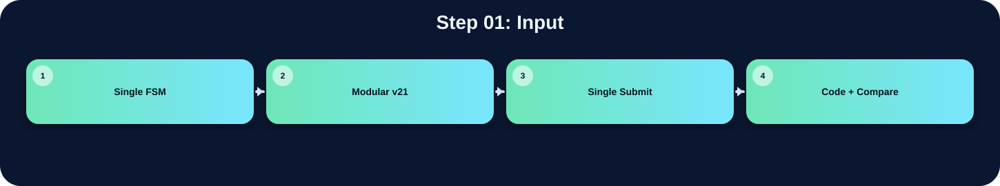

讀取原始 RGB 影像資料，是整個 drawBbox pipeline 的起點。

此表把本流程在三個版本中的 state/module 與 code 關係整理出來；沒有明確對應者保持空白。
| 版本 | 對應 state / module | 和 code 的關係 |
|---|---|---|
| Single FSM | S_LOAD | S_LOAD 會打開 ImgROM，用 Img_A 依序讀入 256×256 的 RGB pixel |
| Modular v21 | ST_THRES / threshold_v21_fast | threshold module 從 ImgROM 讀入原始 RGB pixel |
| Single Submit | ST_THRES / threshold | threshold module 透過 Img_addr 從 ImgROM 讀取原始 RGB pixel |
在「Input」流程中，三個版本都能對應到功能實作，但組織方式不同。Single FSM 版把功能集中在 S_LOAD，屬於 state-level 的集中控制。Modular v21 版對應到 ST_THRES / threshold_v21_fast，通常由 top FSM 啟動特定子模組處理。Single Submit 版對應到 ST_THRES / threshold，雖然整份 code 合併在同一個檔案中，但功能仍由相對應的 module 或 internal state 完成。因此比較重點不是功能有沒有做，而是硬體排程方式、記憶體控制權與模組邊界不同。
下方採用下拉式區塊顯示。中文說明放在程式碼上方；原始程式碼本身沒有修改、沒有插入註解。若某份檔案沒有明確對應流程，該程式碼區塊保持空白。
S_LOAD: begin
Img_CEN<=1'b0;
Img_A <= (req_cnt<17'd65536) ? req_cnt[15:0] : 16'd0;
if (req_cnt>=17'd2) begin
Ur_CEN<=1'b0; Ur_WEN<=1'b0;
Ur_A <= req_cnt[15:0]-16'd2;
Ur_D <= {24'd0, gray_round_rgb(Img_Q)};
Ans_CEN<=1'b0; Ans_WEN<=1'b0;
Ans_A <= req_cnt[15:0]-16'd2;
Ans_D <= Img_Q;
if (req_cnt==17'd2) first_pixel<=Img_Q;
end
if (req_cnt<17'd256) row_label[req_cnt[7:0]]<=9'd0;
if (req_cnt==17'd65537) begin
req_cnt<=17'd0; addr_cnt<=16'd0; label_idx<=9'd0;
state<=S_HIST_CLEAR;
end else req_cnt<=req_cnt+17'd1;
end
`timescale 1ns/1ps
// ============================================================================
// File : drawBbox_report_style_clean_v1.v
// Module : drawBbox
// Lab : iVCAD Lab7 - Draw Bounding Box
//
// Design summary
// This RTL keeps a single public submit file while separating the image
// processing flow into four hardware stages. The top module is responsible
// only for stage scheduling and SRAM/ROM ownership selection. The arithmetic
// and image-processing operations stay inside their corresponding stage
// modules so that the synthesis tool can optimize smaller logic cones.
//
// Processing flow
// 1. threshold_v21_fast : RGB-to-gray conversion, 3x3 Gaussian smoothing,
// histogram accumulation, and Otsu threshold search.
// 2. polarity_v21_fast : foreground polarity decision using the number of
// pixels above/below the selected threshold.
// 3. ccl_v21_fast : connected-component labeling and equivalence-table
// resolution.
// 4. boxing_v21_fast : bounding-box coordinate extraction and green box
// overlay on the final output image.
//
// Fixed-point arithmetic notes
// Grayscale conversion is implemented as an integer approximation of
// Gray = 0.299R + 0.587G + 0.114B
// using Q16 coefficients:
// Gray = round_even((19595R + 38470G + 7471B) / 65536)
//
// Gaussian smoothing uses the separable 3x3 kernel
// [1 2 1; 2 4 2; 1 2 1] / 16
// and is implemented with shifts and additions instead of multipliers.
//
// Otsu score comparison avoids direct division in the critical comparison by
// using cross multiplication:
// score(T) = numerator(T) / denominator(T)
// score(a) >= score(b) <=> numerator(a)*denominator(b)
// >= numerator(b)*denominator(a)
//
// Interface note
// The external top-module name and ports are intentionally unchanged so the
// original Lab7 testbench can instantiate this design without modification.
// ============================================================================
module drawBbox (
input clk, // 系統時脈輸入
input rst, // 同步或非同步重置信號
input enable, // 啟動整體影像處理流程
output done, // 輸出完成旗標
// ImgROM
input [31:0] Img_Q, // ImgROM 讀回的 32-bit RGB pixel
output Img_CEN, // ImgROM 低有效 chip enable
output reg [15:0] Img_A, // ImgROM 讀取位址
// UrSRAM
input [31:0] Ur_Q, // UrSRAM 讀回資料
output Ur_CEN, // UrSRAM 低有效 chip enable
output Ur_WEN, // UrSRAM 讀寫控制，0 為寫入、1 為讀取
output [15:0] Ur_A, // UrSRAM 存取位址
output [31:0] Ur_D, // UrSRAM 寫入資料
// AnsSRAM
input [31:0] Ans_Q, // AnsSRAM 讀回資料
output Ans_CEN, // AnsSRAM 低有效 chip enable
output Ans_WEN, // AnsSRAM 讀寫控制，0 為寫入、1 為讀取
output [31:0] Ans_D, // AnsSRAM 寫入資料
output [15:0] Ans_A // AnsSRAM 存取位址
);
// ---------------------------------------------------------------------------
// Top-level stage controller
// The top FSM grants memory ownership to exactly one processing stage at a
// time. Each stage receives a one-cycle start pulse only after the FSM has
// entered that stage, preventing a submodule from using a stale bus owner.
// ---------------------------------------------------------------------------
localparam ST_IDLE = 3'd0; // FSM 狀態或常數參數宣告
localparam ST_THRES = 3'd1; // FSM 狀態或常數參數宣告
localparam ST_POL = 3'd2; // FSM 狀態或常數參數宣告
localparam ST_CCL = 3'd3; // FSM 狀態或常數參數宣告
localparam ST_BOX = 3'd4; // FSM 狀態或常數參數宣告
wire box_done; // bounding-box stage 完成旗標
reg [2:0] state, next_state; // 目前 top FSM 狀態
reg [2:0] state_d; // 前一拍 top FSM 狀態，用於產生 start pulse
always @(posedge clk or posedge rst) begin
if (rst) begin
state <= ST_IDLE;
state_d <= ST_IDLE;
end else begin
state_d <= state;// ================================================================
// Combined single-file drawBbox.v
// Generated by merging: drawBbox.v + threshold.v + polarity.v + ccl.v + boxing.v
// Note: original `include directives are removed because all modules are in this file.
// ================================================================
// ================================================================
// Source: drawBbox.v
// ================================================================
module drawBbox (
input clk,
input rst,
input enable,
output done,
// ImgROM
input [31:0] Img_Q,
output Img_CEN,
output reg [15:0] Img_A,
// UrSRAM
input [31:0] Ur_Q,
output Ur_CEN,
output Ur_WEN,
output [15:0] Ur_A,
output [31:0] Ur_D,
// AnsSRAM
input [31:0] Ans_Q,
output Ans_CEN,
output Ans_WEN,
output [31:0] Ans_D,
output [15:0] Ans_A
);
// ==========================================
// 頂層主控狀態機 (Top-level FSM)
// ==========================================
localparam ST_IDLE = 3'd0;
localparam ST_THRES = 3'd1;
localparam ST_POL = 3'd2;
localparam ST_CCL = 3'd3;
localparam ST_BOX = 3'd4;
wire box_done;
reg [2:0] state, next_state;
always @(posedge clk or posedge rst) begin
if (rst) state <= ST_IDLE;
else state <= next_state;
end
// ==========================================
// 階段 1: Threshold
// ==========================================
wire [7:0] threshold;
wire thres_done;
wire thres_img_cen;
wire [15:0] thres_img_addr;
wire thres_ur_cen;
wire thres_ur_wen;
wire [15:0] thres_ur_a;
wire [31:0] thres_ur_d;